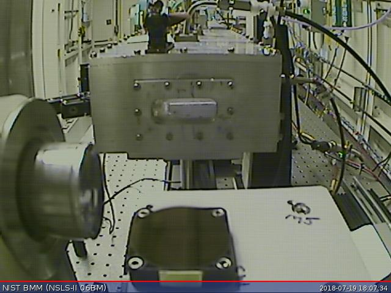
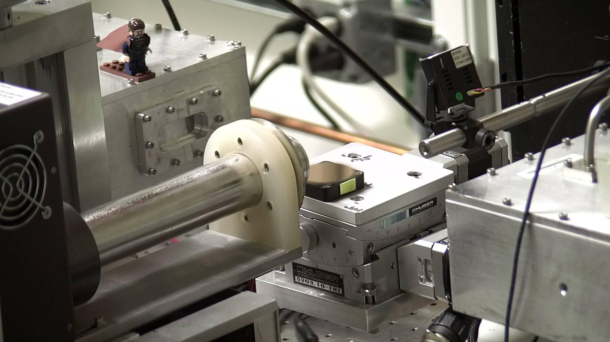
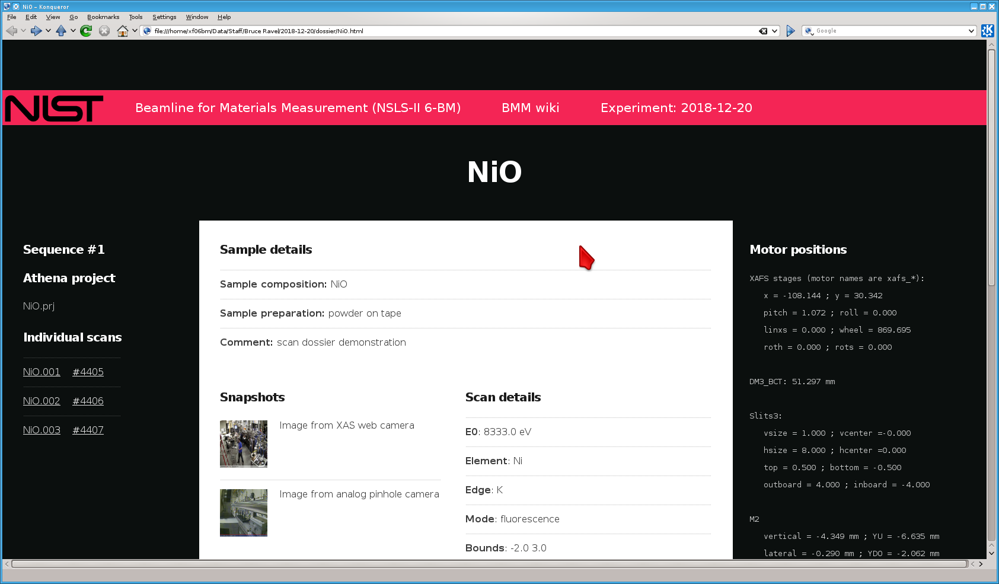

6. Experimental Log¶
At BMM, we are trying to run the system in a way that automatically generates a useful electronic log book. This is meant to complement – not replace – a paper log book or an online system like Olog.
The point of the BMM experimental log is to capture with time stamps all the significant actions at the beamline. In part, this provides a record of the actions in an experimental campaign. It also is an attempt to provide enough information to recover from mistakes and confusions about sample positions and other experimental issues.
6.1. Log file¶
At the beginning of a user experiment, run something like this command:
BMMuser.start_experiment('Betty Cooper', date='2019-02-28', gup=123456, saf=654321)
Among other things, this instruments the logger to maintain a log file specifically for the current experiment. The logger also maintains a master log file which is, effectively, a concatenation of all the individual experimental logs.
The log is an attempt to capture a record of all significant actions taken during an experimental campaign. It errs of the conservative side in that it likely captures way too much information.
Experimental events are captures with a time stamp and a brief explanation of what happened. For example, when a motor is moved, the motor name and target position are written to the log with a time stamp.
Similarly, a line scan or an XAFS scan is captured with enough
information to understand what the scan accomplished. For a line
scan, the motor name, scan range, and starting position are captured.
For an XAFS scan, the contents of the INI file (See Section
5) are written to the log along with the motor positions as
reported by the ms() command (see Section 2).
The names of the output data files are recorded with timestamps
indicating when they were written.
Several other activities specific to BMM also recorded to the log file. The snapshot tool described above is an example.
Writing to the log file is accomplished in two ways. This function:
BMM_log_info('text of message')
is used to insert most messages into the log. BMM_log_info() can
be called at any time from the command line to insert any message into
the log.
BMM also uses Bluesky’s msg_hook.
This is how mv() and mvr() commands are captured in the log.
This bespoke message hook parses the document returned by BlueSky for
specific kinds of events and captures a log message when appropriate.
6.2. Snapshots¶
The XAFS scan plan described in Section 5 includes a
step where snapshots are taken from the XAS webcam and the small
analog camera. These photos are written to JPG files with names
related to the XAS data file written as part of the call to the
xafs() plan. This provides automated photographic documentation
of the state of the measurement as it is being made.
Snapshots can be taken at any time using this command:
snap('<camera>', filename='/path/to/image.jpg')
The choices for <camera> are
XAS- Take a snapshot from the XAS webcam
XRD- Take a snapshot from the XRD webcam
analog- Take a snapshot of the image currently displayed on the monitor to the left of the control station.
The image will then be written to the file specified by the
filename= argument.
The xafs() plan calls this function twice, once for the XAS webcam
and once for the analog camera.
Note that this function is not run through the Run Engine.
The name of the snapshot file and the camera used are written to the experimental log.
{kind=link}

Fig. 6.1 Snapshot taken with the analog camera
{kind=link}

Fig. 6.2 Snapshot taken with the XAS web camera
Todo
Have database consume snapshots with pointers from each scan connected with the snapshot
6.3. Scan dossier¶
The BMM data collection system now captures a dossier for each scan sequence that is run. The definition of a scan sequence is a call to the xafs program (Section 5.4), which may involve multiple repetitions of the scan.
The dossier is a static html file which captures most of the information discussed on this page. It includes, links to each individual data file, the transient ID and UID for each scan, links to the snapshots, tables of information from the INI file (Section 5.1), a verbatim copy of the INI file, and a table of motor positions at the time of the beginning of the scan sequence.
These dossiers aggregate other assets described on this page and complement the user’s paper logbook by providing comprehensive summaries of all the information relevant to the scan sequence provided by the user and gleaned from beamline instrumentation.
{kind=link}

Fig. 6.3 An example of the scan sequence dossier, displayed in a web browser.
This manual is copyright © 2018-2020 Bruce Ravel
 This document is licensed under The Creative Commons Attribution-ShareAlike License.
This document is licensed under The Creative Commons Attribution-ShareAlike License.
If this document is useful to you, please consider supporting The Creative Commons.